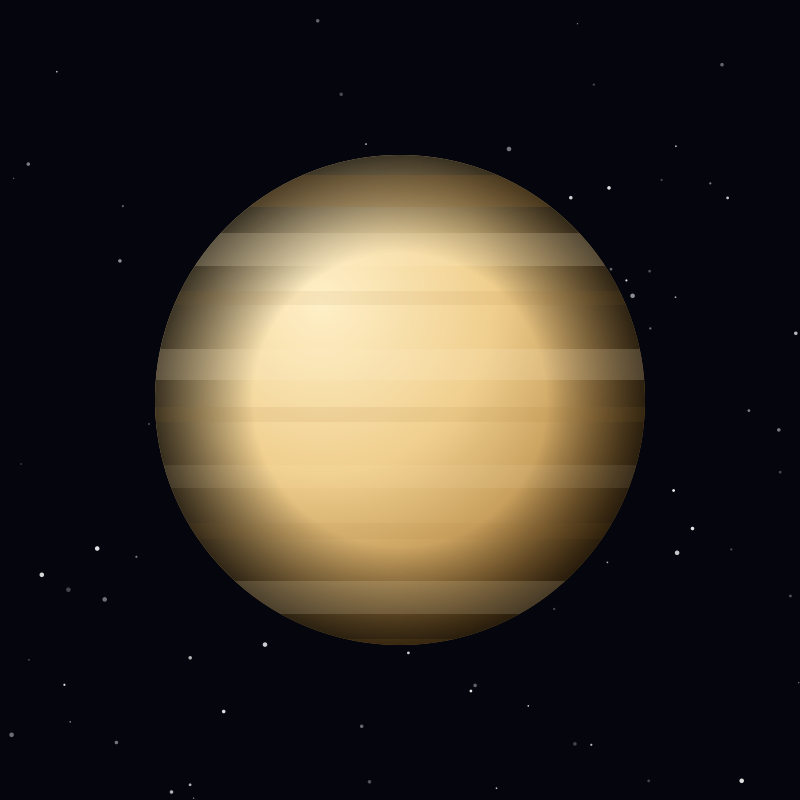

Planet
Venus
Earth's near-twin in size, wrapped in a thick carbon dioxide atmosphere that traps heat until its surface glows at 464°C.
Object 03 of 26

Key facts
- Distance from Earth
- 38 million km (closest)
- Radius
- 6,052 km
- Mass
- 4.87 × 10²⁴ kg
- Surface gravity
- 8.87 m/s² (90% of Earth)
- Orbital period
- 225 days
- Surface temperature
- 464°C (average)
- Atmosphere
- 96.5% carbon dioxide
- Rotation
- 243 days (retrograde)
Overview
Venus is the second planet from the Sun and Earth's closest twin by size and mass, which is why it earned the nickname 'Earth's twin'. The resemblance ends at the surface. Venus is the hottest planet in the solar system — hotter even than Mercury — because its atmosphere traps heat in a runaway greenhouse effect.
It rotates backwards compared with most planets, and so slowly that a single Venusian day lasts 243 Earth days, longer than its 225-day year. From the surface, the Sun would rise in the west once every 117 Earth days.
Surface & Interior
Radar mapping by NASA's Magellan spacecraft revealed a world of volcanic plains, shield volcanoes and mountain ridges, including Maat Mons at nearly 8 kilometres high. There are no ocean basins and apparently no plate tectonics — the crust is a single unbroken shell.
Surface pressure is about 92 times Earth's, the same crush a diver feels 900 metres underwater. Landing probes have recorded a landscape of smooth, fractured basalt bathed in a dim orange light.
Atmosphere
The atmosphere is 96.5 percent carbon dioxide with clouds of sulfuric acid droplets. Those clouds reflect about 76 percent of incoming sunlight, which is why Venus is so bright in our sky, yet very little of that light ever reaches the ground.
At cloud level the winds race around the planet in about four days, far faster than the planet itself rotates — a phenomenon called super-rotation that still puzzles atmospheric scientists.
Exploration
Mariner 2 made the first successful planetary flyby in 1962. The Soviet Venera programme achieved the first soft landing on another planet in 1970, and Venera 13 survived on the surface for 127 minutes in 1982.
Magellan mapped 98 percent of the surface by radar between 1990 and 1994. ESA's EnVision, along with NASA's proposed VERITAS and DAVINCI missions, aim to map the surface in detail and measure whether Venus still has active volcanism today.